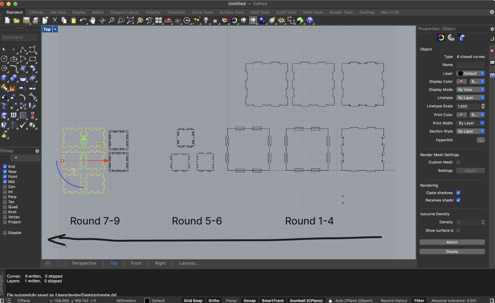
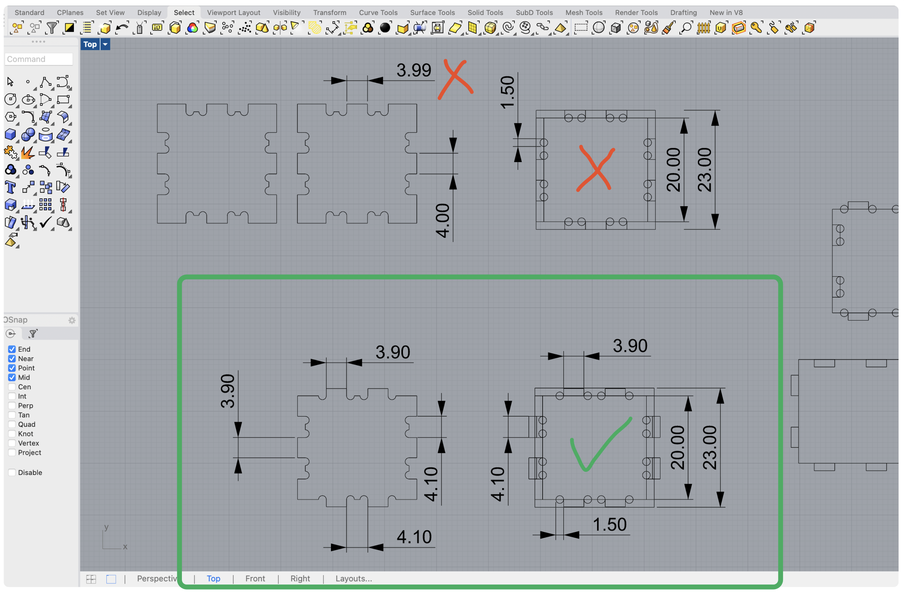
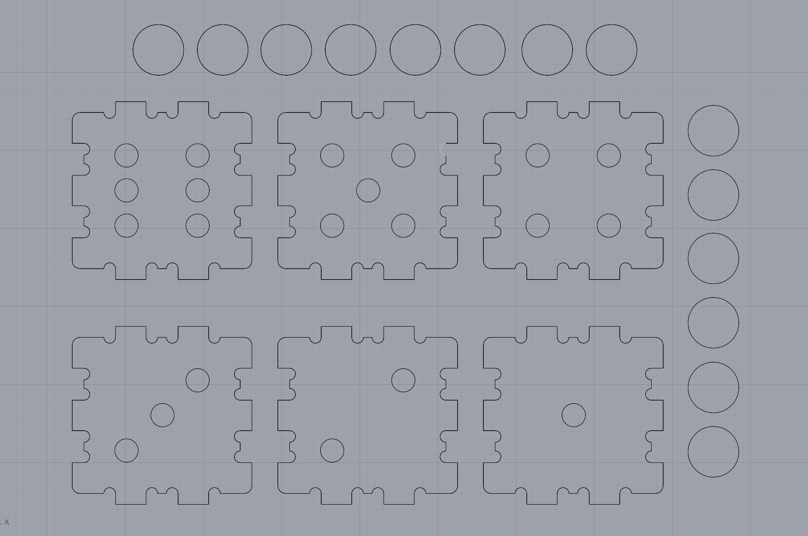

CNC milling a box requirements:
1/ box with e.g. boxjoints/fingerjoints, tabs, or another joining method
2/ can be milled out of FR1 on the Othermill
3/ use dogbones or other milling aids
4/ use Bantam Tools' software to generate g-code
5/ mill the box and assemble it -- it should not fall apart
1/ box with e.g. boxjoints/fingerjoints, tabs, or another joining method
2/ can be milled out of FR1 on the Othermill
3/ use dogbones or other milling aids
4/ use Bantam Tools' software to generate g-code
5/ mill the box and assemble it -- it should not fall apart
- box rhino file
- box tolerance = 0.05mm each tabe side, 1mm total
- thanks to Nathan and Flo for helping troubleshoot the mill 😭
- thanks to Yubo for for teaching me amazing rhino commands: offset, mirror, and curveboolean
- I recommend wearing a mask when milling
Design
I should have started out sketching, but instead
I went straight to Rhino. This is probably why it took me an extra
4 hours to make something I could actually print.
I tried for about 1 hour to go the rhino x grasshopper route, because it would be easier to make design adjustments (especially with tolerances) but I still found it challenging to use grasshopper. This tutorial seemed promising, but I shifted gears and went back to designing in Rhino based on the tips that Yubo shared.
My new fave Rhino commands: Dim, join, mirror, and curveboolean. Aspirationally and also unintentually ended up with a box piece that worked for all 6 sides. So I didn't need to design different tabs for the different sides.
I tried for about 1 hour to go the rhino x grasshopper route, because it would be easier to make design adjustments (especially with tolerances) but I still found it challenging to use grasshopper. This tutorial seemed promising, but I shifted gears and went back to designing in Rhino based on the tips that Yubo shared.
My new fave Rhino commands: Dim, join, mirror, and curveboolean. Aspirationally and also unintentually ended up with a box piece that worked for all 6 sides. So I didn't need to design different tabs for the different sides.



Milling
What I did
- created 2 tabs and 2 slots
- I was going to try 0.1 tolerance, but Yubo and Flo said that was too loose, so I reduced tolerace.
- in my first mill, my bit broke in half, it was because I didn't add and offselt
- tried tolerance = 0.03mm first, the tabs and slots didn't fit, not even close
- tried tolerance = 0.05mm, it was a perfect fit, I felt like 0.045mm would have worked too
After finding a good fit, I printed my first cube! With some light cellphone tapping, all the pieces fit in nicely. I found the edges a little sharp, so I printed another cube with fillet edges and threw in some small circles to make a die.


Final